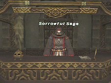
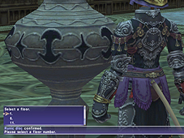
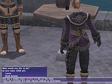
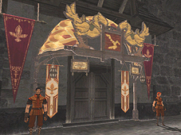
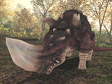
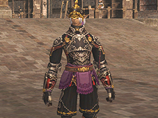
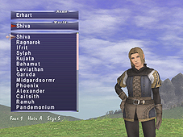
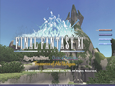
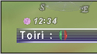

[Event-Related]
New Aht Urhgan missions have been added.
The following changes have been made to Besieged:
- Level 7 Besieged has now been released. Accordingly, the maximum value for enemy forces has increased to 170.
- New Notorious Monsters and Level 7 units comprised of new creatures will now appear during Besieged.
- The variety of temporary items distributed at the beginning of every Besieged has been expanded. The availability of these items will depend on which NPCs have been taken captive and the overall condition of the Imperial defense.
- The Serpent Generals have each received unique new combat abilities to use during Besieged.
The following changes have been made to the Chocobo Hot and Cold Game:
- There are now new chocograph areas available in which to play the Chocobo Hot and Cold Game.
*To obtain the new chocographs, players must first succeed a number of times in discovering treasure in the existing areas.
*Players will find the number of times they can dig in the new chocograph areas will be less than existing areas.
- When digging with a tired chocobo in a location where treasure is buried, there is a chance that you will “hit the jackpot.” If this happens, it will be possible to discover the treasure chest in your next digging attempt.
*After “hitting the jackpot,” the subsequent digging attempt does not count towards the maximum number allowed.
- Items obtainable in the prairie chocograph and bush chocograph areas have been adjusted.
- Your chocobo’s general digging ability will now be improved when successfully discovering treasure.
*The amount the ability improves varies with the chocograph area.
*The exact value of the ability increase will not be displayed.
The new mercenary rank “Chief Sergeant” is now attainable.
Players with the rank of Chief Sergeant will have access to new items in exchange for Imperial Standing credits.
The following changes have been made to Assault:
- Five new Assault missions have been added for players with the rank of Chief Sergeant.

- The new Assault area “Nyzul Isle” has been released.
A reception counter for Nyzul Isle Assault missions has been opened within the Commissions Agency in Aht Urhgan Whitegate.
Mission Flow
1. Sign up at the Commissions Agency as you would for a normal Assault mission, then enter the Assault area from the Nyzul Isle staging point.
*Players cannot impose a level restriction on Nyzul Isle Assault missions.
*Players do not earn Assault Points for missions completed within the Nyzul Isle Assault area.

2. The Nyzul Isle Assault area will be randomly generated as a series of "floors" every time you begin a mission. After entering the area, you will be required to use the Rune of Transfer to select a floor.
3. After being transported to the destination floor, your mission objective will be relayed to you through the Rune of Transfer.
4. After completing the mission objective for a particular floor, the Rune of Transfer will be activated. You will then have the choice to proceed to the next floor, or end the mission and exit the Assault area.
Your mission will be considered a success when you exit the Assault area in this manner. At this point, you will be able to record the number of “tokens” (the equivalent of Assault Points for Nyzul Isle) you are entitled to, as well as the highest floor you have reached.
*Only the person who operates the Rune of Transfer on the starting floor will receive the recorded floor data.
*All participants will obtain tokens from a successful mission.
Recording Progress
When using the Rune of Transfer to exit the Nyzul Isle Assault area, it is possible to record the data of the highest floor you have reached (in blocks of 5 floors). Once this data has been recorded, you will be able to start again from this point.
The player with command of the mission must decide whether it is possible to record a new highest floor within the time remaining, or choose to exit the area and collect the spoils for a successful mission. Players that are forced to leave the Assault area due to an expired time limit, or leave the area using other transportation magic will not be eligible to record floor data or receive tokens.
*Starting from a recorded floor will require the use of "tokens" obtained within the Nyzul Isle Assault area. The further you progress, the more tokens you will need to begin the next block of floors.

A new mini game called “Venture Roll” is now playable on “Game Tables” found in the areas listed below. Two to four people can play Venture Roll, with the winner walking away with the combined participation fee.
Nashmau/Southern San d’Oria/Northern San d’Oria/Port Bastok/Windurst Waters/Windurst Woods/Upper Jeuno/Lower Jeuno/Port Jeuno
*The participation fee varies from 300 gil to 10,000 gil, depending on the area.
The NPC that extends Mog Locker leases will now accept more than one Imperial bronze piece at a time.
New quests have been added to the Treasures of Aht Urhgan areas.
The following quest changes have been made:
- A job level requirement has been added to the quests listed below. The required level varies from quest to quest.
The Rumor/Intermediate Teamwork/Healing the Land/Altana's Sorrow/Making the Grade/Curses, Foiled A-Golem!?/Know One's Onions/Acting in Good Faith/ Stop Your Whining/Secret of the Damp Scroll/The Sahagin's Stash/It's Not Your Vault
-A new level requirement has been added to the quest “An Explorer's Footsteps,” and the once-a-day offer restriction has been removed.
-Supply quests can now be undertaken only once a day (Earth time).
*Players must wait until 0:00 JST before attempting to retake the quest.
It is now possible to check which item was first traded to the NPC in the quest “In the Name of Science.”

A Chocobo Racing Association NPC has been placed in each of the three main nations.
An NPC who will mark important locations on your map can be found in the areas listed below.
Aht Urhgan Whitegate/Southern San d’Oria/Port Bastok/Windurst Waters/Ru’Lude Gardens
An NPC with airship and ferry arrival/departure times has been placed in the areas listed below.
Art Urhgan Whitegate/Nashmau/Port San d’Oria/Port Bastok/Port Windurst/Kazham
Players will no longer lose experience points when KO’d in Chain of Promathia mission battlefields.
There is now a smaller chance for the “Large Apparatus” to malfunction when traveling to Tu'Lia via the Hall of Transference.
It is now possible to seal memories and reset Promyvion missions using the “Shattered Telepoint” found at the crags.
It is now possible to speak to your Fellow and find out how many enemies you have defeated since your Fellow was summoned.
[Battle-Related]

New monsters have been placed in the Treasures of Aht Urhgan areas.
The location of certain monsters in the Bhaflau Thickets has been changed.
An issue where the “Aht Urhgan Attercop” in the Wajaom Woodlands would not link with other monsters of the same type in combat has been addressed.
The strength of certain monsters in the Grand Palace of Hu'Xzoi and the Garden of Ru'Hmet has been adjusted.
The following bonuses have been added to the Signet effect.
- Increased Healing HP while resting
The initial value for Healing HP (based on the character’s level), as well as the incremental jumps in Healing HP (based on the character’s maximum HP), will be increased.
- No TP loss while resting
While this bonus is in effect, TP will not be lost while resting.
- Bonus experience in small groups
The amount of experience earned while in smaller parties will be increased.
This bonus will be applied in the following manner:
*This bonus does not apply to select monsters, such as the Flesh Eaters in Attohwa Chasm or the Hippogryphs in Riverne - Site #A01.
- Increased defense and evasion against attacks from your auto-attack target
If an auto-attack target is an “even match” or weaker, players will gain a bonus to their defense and evasion against the monster.
This bonus only applies to attacks from an opponent who you are auto-attacking with a drawn weapon. No bonus will be obtained when attacking in a manner other than auto-attack, or when being attacked by monsters that unexpectedly join the fray.
*The bonuses described above will only take effect when a player has received Signet, and is within the usual Signet-specific areas.
*These bonuses do not apply during Ballista, or other PvP events.
The following adjustments have been made to the merit point system.
- A graphic effect visible to other players will now be displayed when a character obtains a merit point.
- It is now possible to switch from experience point mode to limit point mode outside of your Mog House.
*Players cannot switch modes while under a level restriction, or when participating in Besieged.
*It is still only possible to allocate merit points while in your Mog House or Rent-a-Room.
The following changes have been made to paladin job abilities.
- The message displayed when using “Sentinel” has been revised.
- “Rampart” will no longer overwrite other effects such as “Stoneskin.”
The following new spells have been added.
| Dark Magic | ||
| Drain II | Lv.62 DRK |
Steals an enemy's HP, potentially increasing maximum HP. Ineffective against undead. |
| Dread Spikes | Lv.71 DRK |
Covers you with magical darkness spikes. Steals HP from enemies that hit you. Ineffective against undead. |
*The effect of Dread Spikes will be adjusted during PvP.
*The dark knight will still be KO’d if a single attack inflicts an amount of damage that exceeds his remaining HP.
The enmity gained when using “Chocobo Mazurka” or “Raptor Mazurka” has been reduced.
A dragoon’s wyvern will now perform the following emotes along with its master:
blush/bow/cheer/clap/dance/goodbye/hurray/joy/panic/point/salute/surprised/wave
The incorrect range for the blue magic spells “Wild Carrot” and “Magic Fruit” has been adjusted.
Several new automaton attachments have been added.
The following changes have been made to Conflict (Ballista, Brenner):
- The diminishing probability for the samurai job ability “Seigan” to maintain the effect of “Third Eye” has been adjusted.
- Player resistance built up towards the continued use of spells and abilities with the “Bind” effect has been enhanced.
[Item-Related]

New equipment has been added.
New synthesis recipes have been introduced.
The synthesis recipes listed below were temporarily removed in the February 2007 version update. These recipes will now create different items.
rusty cap/rusty greatsword/rusty pick
The equipment storage NPC will now accept sets of relic armor.
Players will now be able to obtain “Card Cases” for carrying up to 99 corsair cards as one item.
Players can now obtain a “virtue stone pouch” containing 99 virtue stones from the relevant NPC.
The conditions for certain Notorious Monsters to appear, as well as certain treasure drops, have been adjusted in the following manner:
- The method for obtaining the items listed below has been adjusted.
The monsters that dropped these items now have a chance of dropping an EX/Rare item with the exact same attributes.
Fuma Kyahan/Speed Belt/Ochiudo's Kote/Strider Boots/Healing Staff/Eurytos' Bow/Cross-Counters
- The Notorious Monsters listed below now require a certain item to be traded in a certain location in order to appear.
Big Bomb/Alkyoneus/Pallas/Sozu Rogberry/Ullikummi
- The items listed below can now be obtained through different methods.
Cassie Earring/Serket Ring/Juggernaut
*The Juggernaut will still also drop from the usual monster, but at a lower probability.
- The “Lock of Siren's Hair” will be removed from the treasure dropped by the following Notorious Monsters.
Voll the Sharkfinned/Zuug the Shoreleaper/Pahh the Gullcaller/Worr the Clawfisted/
Novv the Whitehearted
*In accordance with this change, the drop rate of this item from monsters other than the four mentioned above will be increased.
- An item to replace the “Kraken Club” has been added to the treasure dropped by the “Lord of Onzozo.”
- Certain items obtained from the Notorious Monsters holding the “Virtues” in Lumoria will now drop with 100% probability.
The message displayed with the Physical damage: "Curse" effect of the Igqira set has been revised.
The following item change has been made to mining in Halvung:
Mithril Ore → Aht Urhgan Brass
[System-Related]

The system that required a “World Pass” to choose the world on which to create a character has been removed from the game. It is now possible to freely choose the world on which you wish to begin your adventures.
*You will also be able to choose the World in which you wish to create subsequent characters.
*World Pass NPCs in the three main nations will now only deal with Gold World Passes.
*The Gold World Passes used in the New Adventurer system will still be issued.
Related Information>>

The following scenes have been added to the title screen:
- FINAL FANTASY XI:
Pashhow Marshlands/Beaucedine Glacier
- Rise of the Zilart:
Ru'Aun Gardens
- Treasures of Aht Urhgan:
Aydeewa Subterrane
To avoid congestion, players will now appear in a slightly different location when exiting their Mog House into Aht Urhgan Whitegate.
The probability for fishing up items other than fish has been adjusted.
The location of the “Downloading data” message in the help window has been adjusted.
Several new terms have been added to the auto-translate feature.
| Category | Term |
| Game Terms | Support Job |
| Game Terms | Sanction |
| Game Terms | Chocobo Racing |
| Game Terms | Chocobucks |
| Game Terms | Healing Breath |
| Titles | Private First Class |
| Titles | Sergeant |
| Titles | Corporal |
| Titles | Superior Private |
| Titles | Sergeant Major |
| Titles | Chief Sergeant |
| Titles | Private Second Class |
| Titles | Mercenary |
| Titles | Lance Corporal |
| Languages | German |
| Languages | Can you speak German? |
| Languages | French |
| Languages | Can you speak French? |
| Languages | I don't speak any German. |
| Languages | I don't speak any French. |
| Spells | Dread Spikes |
[Current Known Issue]
At the character creation screen, choosing Mithra face 6 may cause the
game to freeze. This issue is only present in the PlayStation(r)2 version.

Currently, the top Auto-Translate Dictionary entry under Text Commands
is blank. If this entry is selected, only the red and green brackets
will be displayed. This issue is only present in the French and German versions.
The Chocobo Racing system announced on the FINAL FANTASY XI official homepage is scheduled for release towards the end of March.